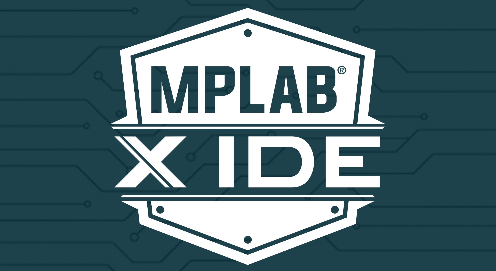
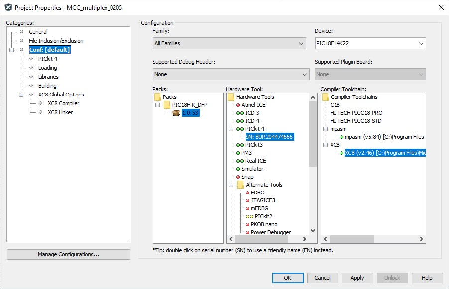

Ebben a tárgyban a Microchip MPLAB X IDE környezetével ismerkedtem meg. Nem a könnyű részével kezdtünk, először Assembly nyelven tanultam programozni, ami bár bonyolultabb, sokat segített abban, hogy megértsem a processzor belső felépítését és a regiszterek pontos működését a C nyelv hatékonyabb programozásához.
Később C nyelven programoztam, ami sokkal átláthatóbbá és gyorsabbá tette számomra a kódolást. Kipróbáltam az MCC (MPLAB Code Configurator) eszközt is, ami nagy könnyebbség volt, mert automatikusan legenerálta a belső modulokat, például az időzítők és megszakítások alapbeállításait, így nem kellett mindent manuálisan beállítanom.

Ehhez a projekthez egy C nyelvű kódot írtam, amivel a tesztpanelen lévő kijelzőket és a LED-sort vezéreltem. A lényeg a multiplexelés volt: a programom olyan gyorsan váltogatja a kijelzők és a LED-ek tápfeszültségét, hogy szabad szemmel nem is látni a villogást, csak azt, hogy minden egyszerre működik. A pontos időzítéshez a Timer0 modult használtam, ez felel azért is, hogy a LED-soron az oda-vissza futófény sebessége egyenletes legyen.
A fény mozgását bitenkénti léptetéssel oldottam meg, ami sokkal elegánsabb és rövidebb megoldás, mintha minden állapotot külön megírtam volna. A fejlesztés alatt sokat fejlődtem abban, hogyan kell a regisztereket (mint a TRIS, a LAT vagy az ANSEL) közvetlenül kezelni, hogy a chip pontosan azt csinálja, amit elterveztem.
Ez a tantárgy megmutatta nekem, hogy mennyire oda kell figyelnem a legkisebb részletekre is a kódolás közben, mert elég egyetlen elírt regiszter és az egész rendszer megáll. Nagyon érdekes volt látni a különbséget a két módszer között, az Assembly megtanított arra, hogy mi történik valójában a chip belsejében, a C nyelv és az MCC használata pedig megmutatta, hogyan lehet igazán hatékonyan és gyorsan haladni a munkával.
Sokat segített a tanulásban, hogy a tesztpanelen a LED-ek és a kijelzők segítségével azonnal láttam a visszajelzést, így sokkal könnyebben és gyorsabban meg tudtam találni és ki tudtam javítani a logikai hibákat.
